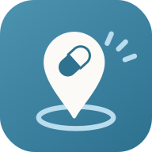

약지도개인정보처리방침
약지도에 적으신 약·복용 기록·몸 상태는 이 휴대폰 안에만 저장됩니다. 저희 서버로 보내지 않으며, 저희는 그 내용을 볼 수 없습니다.
1. 모으는 정보
없습니다. 회원가입·로그인이 없고, 이름·전화번호·기기 번호·광고 식별자를 받지 않습니다. 광고나 이용 분석 도구도 넣지 않았습니다.
2. 휴대폰 안에만 두는 정보
| 무엇 | 왜 |
|---|---|
| 먹는 약, 복용 시간, 먹었어요 기록 | 복용 알림과 오늘 할 일 목록 |
| 남은 알 수 | 약이 떨어지기 전 알림 |
| 나이대, 임신·지병 여부, 불편했던 약 | 같이 먹으면 안 되는 약을 걸러 드리려고 |
| 글자 크기, 화면 밝기 | 보기 편하게 |
3. 위치
홈 날씨 카드에서 「내 위치」를 고르신 경우에만 대략 위치(약 10 km 단위)를 날씨 서비스 Open-Meteo 에 보내 그날 날씨를 받아 옵니다. 저장하지 않습니다. 도시를 직접 고르시면 위치를 쓰지 않습니다.
4. 사진
약 사진은 휴대폰 안에서 글자를 읽는 데만 쓰고, 보내거나 저장하지 않습니다. 글자 읽기 도구 파일만 처음 한 번 인터넷에서 받아 옵니다.
5. 알림
복용 알림은 휴대폰 자체 알람으로 울립니다. 알림에 나오는 약 이름은 휴대폰 밖으로 나가지 않습니다.
6. 지우기
앱을 지우시거나 내 정보 → 휴대폰을 바꾸실 때 → 이 휴대폰의 기록 모두 지우기를 누르시면 모두 사라집니다. 저희 쪽에 남는 것은 없습니다. 휴대폰을 바꾸실 때는 같은 곳의 「파일로 받기」로 옮기실 수 있습니다.
7. 인터넷에서 받아 오는 것
글꼴(구글 폰트 등)·글자 읽기 도구·날씨처럼 공개된 파일과 정보를 받아 올 때, 받는 쪽 서버에는 여느 인터넷 이용처럼 휴대폰의 인터넷 주소(IP)가 전달됩니다. 약지도가 이 서버들에 기록을 함께 보내지는 않습니다.
8. 만 14세 미만
보호자와 함께 쓰시길 권합니다. 아이 약 용량 계산은 보호자가 쓰시는 기능입니다.
9. 바뀔 때
이 방침이 바뀌면 앱과 이 페이지에서 먼저 알려 드립니다.